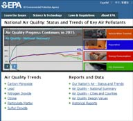
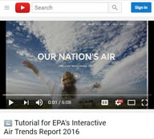
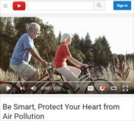
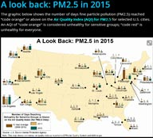
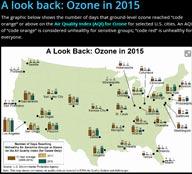
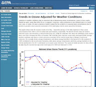
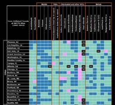

Our Nation's Air
Status and Trends Through 2015
Welcome!
The U.S. Environmental Protection Agency (EPA) is committed to protecting public health by improving air quality and reducing air pollution. This annual report presents the trends in the nation's air quality, and summarizes the detailed information found at EPA's AirTrends website.
Please scroll down to view the annual report, use the top menu to jump to a topic or start by viewing the tutorial video. If encountering any issues viewing content, update or try opening the website in another browser.

Cleaner air prevents tens of thousands of premature deaths, reduces heart attacks and hospital visits, alleviates hundreds of thousands of child asthma attacks, and prevents millions of lost school and work days.
Air quality improves as America grows
Nationally, concentrations of the criteria air pollutants have dropped significantly since 1990:
- Carbon Monoxide (CO) 8-Hour, 77%
- Lead (Pb) 3-Month Average, 99%
- Nitrogen Dioxide (NO2) Annual, 54%
- Nitrogen Dioxide (NO2) 1-Hour, 47%
- Ozone (O3) 8-Hour, 22%
- Particulate Matter 10 microns (PM10) 24-Hour, 39%
- Particulate Matter 2.5 microns (PM2.5) Annual, 37%
- Particulate Matter 2.5 microns (PM2.5) 24-Hour, 37%
- Sulfur Dioxide (SO2) 1-Hour, 81%
During this same period the U.S. economy continued to grow, Americans drove more miles and population and energy use increased.
Tip Click pollutant names in the chart legend to hide or include trend lines, and hover over any line to display percentages above or below the most recent standard. Click the Emissions button below to open a popup window.
Air Pollution includes gases and particles
Air pollution consists of gas and particle contaminants that are present in the atmosphere. Gaseous pollutants include sulfur dioxide (SO2), oxides of nitrogen (NOx), ozone (O3), carbon monoxide (CO), volatile organic compounds (VOCs), certain toxic air pollutants and some gaseous forms of metals. Particle pollution (PM2.5 and PM10) includes a mixture of compounds that can be grouped into five major categories: sulfate, nitrate, elemental (black) carbon, organic carbon and crustal material.
Some pollutants are released directly into the atmosphere while other pollutants are formed in the air from chemical reactions. Ground-level ozone forms when emissions of NOx and VOCs react in the presence of sunlight. Air pollution impacts human health and the environment through a variety of pathways.
Understanding Emission Sources helps control air pollution
Generally, emissions of air pollution come from
- stationary fuel combustion sources (such as electric utilities and industrial boilers),
- industrial and other processes (such as metal smelters, petroleum refineries and cement kilns),
- highway vehicles, and
- non-road mobile sources (such as recreational and construction equipment, marine vessels, aircraft and locomotives).
As the chart shows, sources emit different combinations of pollutants. For example, electric utilities release SO2, NOx and particles.
Air pollution can affect our Health and Environment in many ways
Numerous scientific studies have linked air pollution to a variety of health problems. People at greater risk for experiencing air pollution-related health effects may, depending on the pollutant, include those with heart and respiratory diseases and older adults and children (30-second Healthy Heart video).
Environmental Effects Ozone damages vegetation by injuring leaves, reducing photosynthesis, impairing reproduction and growth and decreasing crop yields. Ozone damage to plants may alter ecosystem structure, reduce biodiversity and decrease plant uptake of CO2. Ozone is also a greenhouse gas that contributes to the warming of the atmosphere.
Environmental Effects Fine particles (PM2.5) are the main cause of reduced visibility (haze) in parts of the U.S., including many national parks and wilderness areas. PM can also be carried over long distances by wind and settle on soils or surface waters. The effects of settling include: making lakes and streams acidic; changing the nutrient balance in coastal waters and large river basins; depleting the nutrients in soil; damaging sensitive forests and farm crops; and affecting the diversity of ecosystems. PM can stain and damage stone and other materials, including culturally important objects such as statues and monuments.
Environmental Effects Emissions of CO contribute to the formation of CO2 and ozone, greenhouse gases that warm the atmosphere.
Environmental Effects Elevated amounts of lead accumulated in soils and fresh water bodies can result in decreased growth and reproductive rates in plants and animals.
Deposition of sulfur oxides contributes to the acidification of soils and surface waters and mercury methylation in wetland areas. Sulfur oxides cause injury to vegetation and species loss in aquatic and terrestrial systems and also contribute to particle formation with associated environmental effects. Sulfate particles contribute to the cooling of the atmosphere.
Environmental Effects Some toxic air pollutants accumulate in the food chain after depositing to soils and surface waters. Wildlife and livestock may also be harmed with sufficient exposure. Some toxic air pollutants contribute to ozone and particle pollution with associated environmental and climate effects (see above).
For more than forty years, the Clean Air Act has cut pollution as the U.S. economy has grown.
Economic Growth with Cleaner Air
By 2014, the combined emissions of the six common pollutants (PM2.5 and PM10, SO2, NOx, VOCs, CO and Pb) dropped 70 percent since 1970. This progress occurred while the U.S. economy continued to grow, Americans drove more miles and population and energy use increased.
Today Americans breathe cleaner air and face lower risks of premature death and other serious health effects.
2005 - 2014 NO2 satellite imagery courtesy of NASA

Criteria Pollutant Trends Show Clean Air Progress
Charts Click and drag the green circle to manually change the year. Click on emission tabs to change the emissions chart. (2015 emissions will be released later in 2016.)
Animation Click the play/pause button to start and pause animation. Click and drag the gray square in the slider to manually change the year.
Map Click on a monitor to display annual concentration data. Double click to zoom in. Click the home button to reset.
Understanding PM2.5 Composition Helps reduce fine particle pollution
The different components that make up particle pollution come from specific sources and are often formed in the atmosphere. The major components, or species, are elemental carbon (EC), organic carbon (OC), sulfate and nitrate compounds, and crustal materials such as soil and ash.
As previously shown, PM2.5 concentrations are declining. Assessing particle pollution concentrations along with composition data aids in understanding the effectiveness of pollution controls and in quantifying the impacts to public health, regional visibility, ecology and climate.
Select a PM2.5 speciation trend and double click on any darker area to display county information. Lighter areas do not have speciation monitors, thus no data reported.
Unhealthy Air Quality Days Trending Down
The Air Quality Index (AQI) relates daily air pollution concentrations for ozone, particle pollution, NO2, CO and SO2 to health concerns for sensitive groups and for the general public. A value of 100 corresponds to the national air quality standard for each pollutant. Values above 100 are considered unhealthy – first for certain sensitive groups of people, then for everyone as the AQI values increase. Fewer unhealthy air quality days means better health, longevity, and quality of life for all of us.
Shown are the number of days in which the combined ozone and PM2.5 AQI was above 100 for the years 2000-2015. Click on the bar chart, or these links, to view the AQI retrospective reviews: PM2.5 and ozone.
Air Quality in Nonattainment Areas Improves
EPA works collaboratively with state, local and tribal agencies to identify areas of the U.S. that do not meet the national ambient air quality standards (NAAQS). These areas, known as nonattainment areas, must develop plans to reduce air pollution and attain the NAAQS.
Consistent with national averages, air quality in nonattainment areas has also improved. Since 2010, there were no violations of the standards for CO and NO2.
Shown are thumbnail images of the NAAQS nonattainment area maps. Click on any map to view a larger interactive version.
Weather plays an important role in the formation of ozone, a pollutant that can affect health even at relatively low levels.
Weather Influences Ozone
A large number of hot, dry days can lead to higher ozone levels in any given year, even if ozone-forming emissions remain unchanged. To better evaluate the progress and effectiveness of ozone precursor emission reduction programs, EPA uses a statistical model to estimate the influence of weather on ozone formation.
After accounting for the effects of weather, EPA's analysis confirms that ozone levels have continued to improve across the U.S. in recent years due to emission reduction programs. For more information please visit the AirTrends website.
The same fine particles that are linked to serious health effects and premature death can also significantly obscure spectacular vistas in our nation's most treasured parks and wilderness areas.
Yosemite National Park on a hazy day
Visibility Improves in Scenic Areas
The National Park Service celebrates 100 years on August 25, 2016! Together, EPA and other agencies monitor visibility trends in 155 of the 156 national parks and wilderness areas (i.e., Class I areas), where clear views are an important value for visitors.
The map indicates a number of Class I areas have improving visibility or decreasing haze (indicated by the downward pointing arrows). To learn more about visibility in parks and view live webcams please visit this National Park Service website.
EPA works with state, local and tribal governments to reduce emissions of the 187 toxic air pollutants suspected to cause cancer or other serious health and environmental effects.
Air Toxics Levels Trending Down
Ambient monitoring data show that some of the toxic air pollutants of greatest widespread concern to public health, such as benzene, 1,3-butadiene and several metals, are declining at most sites. The trend lines on the map are plotted on the same x (year) and y (mean concentration) axes and are directly comparable to each other. Sites may show high or low values in the short-term (spikes); however, colors indicate the long-term statistical trend direction: decreasing, increasing and no trend.
Use the dropdown menu to select a pollutant and hover on trend lines to view additional information. Click and drag over an area to zoom in. View a tabular summary of air toxics trends. The NATTS trends table, included as a supplementary visual to the USA map, depicts air toxics mean concentration trends at the 27 national air toxics trends stations from 2003 to 2014. A vast majority of stations show decreasing or no trend in air toxics across the country.
In 2015, despite significant improvements in air quality, approximately 127 million people lived in counties that exceeded the revised national ground-level ozone standards.
Outlook for Ozone is Encouraging
In 2015, EPA strengthened the national air quality standards for ground-level ozone to 70 parts per billion (ppb) averaged over 8 hours. Approximately 127 million people in 241 counties had monitors exceeding the revised ozone standard in 2015. However, in 2025 and beyond EPA projects these numbers will fall to 20 million people across 18 counties.
Federal rules, including the Cross-State Air Pollution Rule, Mercury and Air Toxics Standards, the Tier 3 Vehicle Emissions and Fuels Standards, and the Clean Power Plan, will help reduce ozone-forming pollution in the years ahead.
Toggle between the tabs at the top of the map to show 2015 versus projected 2025 information. Click either map to view a larger interactive version. View a PDF factsheet about efforts to reduce ozone in California.
Our Nation's Air continues to Improve.
However, work must continue to ensure healthy air for all communities. EPA and our partners at the state, tribal and local levels will continue to work to understand and address the increasingly complex air quality problems we face.
Additional Resources
Please visit other EPA air quality related websites.